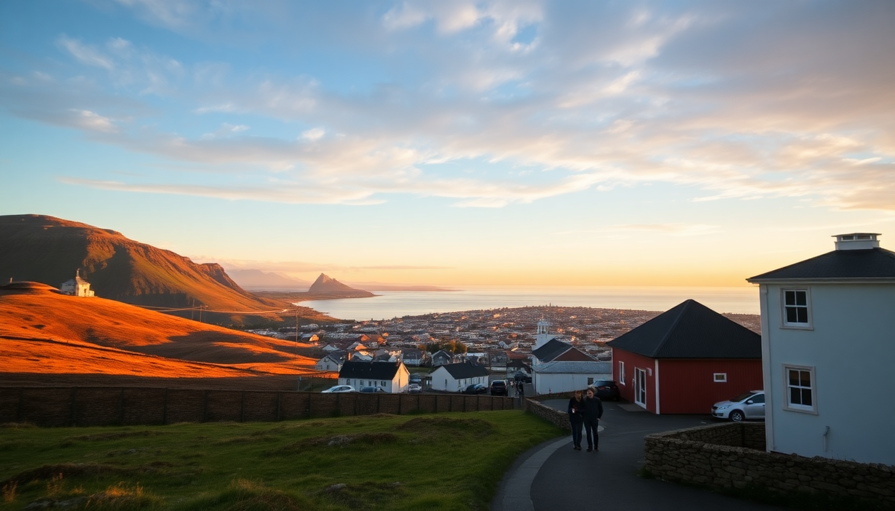

Best Cities in Iceland: Reykjavik, Akureyri & Vik Guide

I just came back from two weeks driving the Ring Road, and here’s the truth: Iceland doesn’t really have “cities” like you’re used to. Reykjavik is a small capital, Akureyri is a big town, and Vik is a village that gets called a city for tourism’s sake. But each one serves a real purpose for trip planners. This guide breaks down exactly what to expect, where to sleep, and what’s worth your time in each.
Why visit Reykjavik first?
Most trips start here because Keflavik Airport is where you land. Reykjavik is compact—you can walk most of the downtown in 20 minutes. I spent three nights at Kex Hostel, which used to be a biscuit factory and still has that industrial-chic vibe. For a proper hotel, Hotel Borg on Austurstræti puts you right by the main square.
The city feels like a college town with better coffee. Reykjavik Roasters on Kárastígur has the best flat white I had in Iceland. Skip the hot dog at Bæjarins Beztu Pylsur—it’s famous but honestly just a lamb sausage with remoulade. Instead, grab a bowl at Svarta Kaffið where they serve soup in a bread bowl.
- Hallgrímskirkja: Climb the tower for the best city view. The line moves fast.
- Harpa Concert Hall: Free to walk around. The glass facade looks better at sunset.
- Laugavegur Street: Main shopping drag. Kolaportið Flea Market opens weekends only.
- Sun Voyager sculpture: A five-minute photo stop. Don’t plan more time.
Nightlife here is real. Bars close at 1 AM on weeknights, 4:30 AM on weekends. Kaffibarinn is the locals’ spot—small, dark, and packed after midnight.
Is Akureyri worth the drive north?
Yes, but only if you’re doing the Ring Road or heading to the north specifically. Akureyri is Iceland’s “capital of the north” with about 19,000 people. I liked it more than Reykjavik for one reason: it felt like a real working town, not a tourist hub.
We stayed at Akureyri Backpackers, which has a solid kitchen and a hot tub on the roof. For a nicer option, Hotel Kea sits right on the main square and has a breakfast buffet with skyr and smoked trout.
The Akureyri Botanical Garden is surprisingly good—free to enter, and they grow plants from all over the world despite being just 60 miles from the Arctic Circle. The Christmas House is a year-round Christmas shop. If you’re into that, fine. If not, skip it.
- Goðafoss waterfall: 45 minutes east. You can walk right up to the edge. More impressive than Gullfoss in my opinion.
- Whale watching: Húsavík is 45 minutes north and has better whale tours than Akureyri itself. North Sailing runs small boats.
- Sulphur baths: GeoSea in Húsavík is a geothermal infinity pool overlooking the bay. Less crowded than Blue Lagoon.
- Akureyri Church: Landmark on the hill. The organ plays at noon on Sundays.
What is Vik like as a base for the south coast?
Vik is not a city. It’s a village of about 750 people. But it’s the only real stop between Selfoss and Höfn on the south coast, so you’ll end up here. I spent one night at Hotel Vík í Mýrdal, which has a great view of the Reynisdrangar sea stacks from the restaurant.
The black sand beach at Reynisfjara is a 10-minute drive west. The waves are dangerous—sneaker waves have killed people here. Never turn your back on the ocean. The basalt columns and cave are worth the stop, but keep your distance from the water.
Vik Church sits on a hill above town. It’s a simple white church with a red roof, and the cemetery has a view of the entire coastline. Spend 10 minutes here.
- Reynisfjara Black Sand Beach: Go early (8 AM) to avoid crowds. No facilities.
- Dyrhólaey Arch: A promontory with a natural arch. Puffins nest here from May to August.
- Skógar Museum: 30 minutes west. Open-air folk museum with turf houses. Allow 90 minutes.
- Vik Food Hall: Newish spot with three vendors. The fish soup is better than the burgers.
The Vik swimming pool is small but has a hot pot. Locals use it. Tourists mostly don’t. Good place to soak after hiking.
When is the best time to visit each city?
I went in early September. Reykjavik was busy but not packed. Akureyri was quiet. Vik was dead after 7 PM. Here’s the breakdown by season:
- June to August: Peak season. Reykjavik is crowded, hotels are expensive, and Vik’s parking lot at Reynisfjara fills by 10 AM. Akureyri has midnight sun—daylight until nearly midnight.
- September to October: Shoulder season. I had good weather (50°F, some rain). Fewer tourists. The Northern Lights start appearing in late September. Akureyri is a better bet for clear skies than Reykjavik.
- November to February: Winter. Reykjavik gets 4-5 hours of daylight. Vik can be snowed in. Akureyri is dark but has the Christmas House and ski slopes at Hlíðarfjall.
- March to May: Spring. Mud season. Roads are clear, but waterfalls are full from snowmelt. Good time to visit Vik because the puffins return in April.
Which city has the best food?
Reykjavik wins by a mile. The food scene is small but serious. Dill Restaurant has a Michelin star and does a tasting menu focused on Icelandic ingredients like fermented lamb and dried fish. It’s expensive (around $150 per person) but worth it for food nerds.
For casual eating in Reykjavik: Íslenski Barinn serves a solid fish and chips and the Icelandic meat soup (kjötsúpa) is comfort in a bowl. Kaffi Loki near Hallgrímskirkja has rye bread ice cream—weird but good.
Akureyri’s best meal is at Rub23, which does sushi and grilled fish. The Arctic char with rhubarb sauce was the best dish I had in the north. Bautinn is the local diner—nothing special, but open late.
Vik has limited options. The Soup Company does a decent lamb soup in a bread bowl. Halldórskaffi is the main restaurant—the fish pie is fine, the service is slow.
What about cities beyond the big three?
If you have time, add these:
- Húsavík: Whale watching capital. The Húsavík Whale Museum is excellent. Stay at Fosshótel Húsavík for lake views.
- Egilsstaðir: Gateway to the Eastfjords. Small, practical. Skálanes Nature Reserve has hiking and puffins.
- Ísafjörður: In the Westfjords. Hard to reach (tunnel, ferry, or flight). Tjöruhúsið restaurant serves fish straight from the boat. Worth the drive if you have three days for the Westfjords.
FAQ
How many days should I spend in Reykjavik vs. Akureyri vs. Vik? Two nights in Reykjavik is enough to see the main sites and eat well. One night in Akureyri covers the town and Goðafoss. One night in Vik works for the south coast attractions. If you add whale watching in Húsavík, budget two nights in the north.
Can I visit Vik as a day trip from Reykjavik? You can, but you shouldn’t. It’s a 2.5-hour drive each way, and you’ll rush through Reynisfjara, Skógar, and Seljalandsfoss. Stay overnight in Vik to hit Dyrhólaey at sunrise and drive the south coast without stress.
Do I need a car to visit these cities? Yes. Public buses exist but run infrequently. I rented a 4x4 Dacia Duster from Blue Car Rental at Keflavik. For the Ring Road, you need a car. For Reykjavik only, you can use the Flybus from the airport and walk everywhere in town.
Conclusion
- Reykjavik is worth two nights for food, nightlife, and the Golden Circle tours. Skip the hot dog hype.
- Akureyri is the underrated stop—quieter, cheaper, and better access to Goðafoss and whale watching in Húsavík.
- Vik is a one-night stop for the south coast. The beach is spectacular but dangerous. The food is average.
- Add Húsavík or Ísafjörður if you have the time. They’re more memorable than the main stops.
- September is the sweet spot for weather, fewer crowds, and Northern Lights potential.